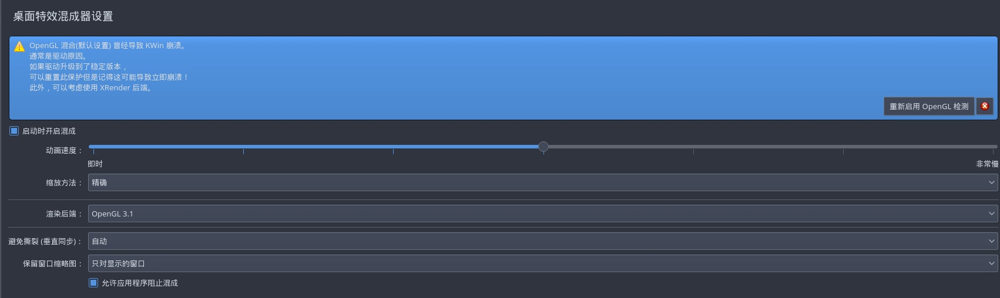

tilda 无法设置透明模式
一觉醒来打开电脑，发现日常使用的tilda终端忽然无法显示透明特效了。
重新进入首选项进行配置，但是根本不管用。
google一下，发现github上有相关的issue。
有人说是配置文件的问题。但是我修改配置文件后依然无效。
有人说是系统设置的问题。于是打开系统设置（不同的电脑设置的不一样，我是 Arch + KDE）搜索composit（混合器），点进去就发现有报错，说是后端渲染OpenGL崩溃了，在该页面重新配置OpenGL，应用配置。

然后关闭tilda重新打开，tilda又可以显示透明特效了。
OpenTSDB 的安装与部署
安装 JDK
jdk直接使用yum安装，原因嘛～我懒！
yum install java-1.8.0-openjdk java-1.8.0-openjdk-devel
安装完jdk记得要配置环境变量，不然可能会导致一些程序不可用
vim /etc/profile
#set java environment
JAVA_HOME=/usr/lib/jvm/java-1.8.0-openjdk-1.8.0.151-1.b12.el6_9.x86_64
PATH=$PATH:$JAVA_HOME/bin
CLASSPATH=.:$JAVA_HOME/lib/dt.jar:$JAVA_HOME/lib/tools.jar
export JAVA_HOME CLASSPATH PATH
加载一下配置文件source /etc/profile
安装 HBase
# 创建存放数据的目录
cd /data
mkdir zookeeper hbase
# 下载hbase，我用的是1.4版本的
cd /soft
wget http://mirrors.shuosc.org/apache/hbase/1.4.0/hbase-1.4.0-bin.tar.gz
tar -zxf hbase-1.4.0-bin.tar.gz
cd hbase-1.4.0
修改配置文件hbase-site.xml，添加hbase的目录和zookeeper的目录
<configuration>
<property>
<name>hbase.rootdir</name>
<value>file:///data/hbase</value>
</property>
<property>
<name>hbase.zookeeper.property.dataDir</name>
<value>/data/zookeeper</value>
</property>
</configuration>
修改配置文件hbase-env.sh，取消下面行的注释，让hbase自己管理一个zookeeper
export HBASE_MANAGES_ZK=true
启动和关闭HBase
/soft/hbase-1.4.0/bin/start-hbase.sh
/soft/hbase-1.4.0/bin/stop-hbase.sh
查看hbase时候启动了，可以使用/soft/hbase-1.4.0/bin/hbase shell命令进入hbase的命令行模式，使用version命令查看版本号
安装OpenTSDB
安装依赖的程序，gnuplot，这是一个绘图的程序
yum install gnuplot
然后去OpenTSDB的GitHub下载最新的rpm包，并安装
yum localinstall opentsdb-2.3.0.rpm
修改配置文件vim /etc/opentsdb/opentsdb.conf
# 监听的配置端口号
tsd.network.port = 4242
# 监听的配置ip
tsd.network.bind = 0.0.0.0
# 自动创建metric，建议开启
tsd.core.auto_create_metrics = true
# 配置使用的zk
tsd.storage.hbase.zk_quorum = localhost:2181
初始化数据库
env COMPRESSION=NONE HBASE_HOME=/usr/hdp/current/hbase-client/ /usr/share/opentsdb/tools/create_table.sh
创建日志目录
mkdir -p /data/logs/opentsdb
启动OpenTSDB
nohup tsdb tsd > /var/log/opentsdb/opentsdb.out &
Copyright © 2015 Powered by MWeb, Theme used GitHub CSS.